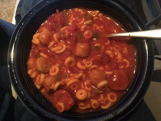

Hot Link Stew

Hot Link Stew
Description:
This is very simple bachelor food.
Ingredients:
- One can of Spaghettios
- A Hot Link Sausage
- A jar of picante sauce
- Tums (for later)
Steps:
- Dice hot link sausage into small pieces. Nuke in the microwave for 45 seconds
- Put Spaghettios, half the jar of picante sauce and the hot link in a sauce pan
- Heat on the stove until it begins to boil. Stir frequently so it doesn't burn
Can be served in a bowl or eaten out of the pan.
Return to Recipes